MICROSOFT 365 COPILOT 博客
Microsoft 365 Copilot 新功能速览 | 2026 年 4 月
本文为 Microsoft 365 Copilot 官方月度更新（2026 年 4 月刊）的中文整理版。每月我们都会梳理新增功能与改进，帮助 Microsoft 365 管理员及时了解 Copilot 的最新能力，让用户在日常所用的应用中更高效地完成工作。
面向用户的能力
Microsoft 365 Copilot 应用：移动端改版与数据接地能力
移动应用全新「聊天优先」设计5 月推出
Microsoft 365 Copilot 移动应用采用了全新的「聊天优先」界面，整体更清爽、更符合直觉。此次更新为提示词输入增加了文本格式支持，并采用新的版式让回复更易于查看、复制、重新打开以及通过引文追溯来源。应用菜单也做了精简，用户可以更轻松地在各项 Copilot 体验之间切换。整体观感更为现代，采用了「液态玻璃」风格，语音对话也有了全新的可视化呈现。
在 Copilot Pages 中用 Work IQ 生成交互式可视化与应用4 月已推出
此前用户已经可以在 Copilot Pages 中基于 Web 数据接地，创建并预览轻量级仪表板、报表和可视化等交互内容。现在，用户可以借助 Work IQ 来生成这些交互式可视化与应用，无需离开页面即可探索和迭代。当需要进一步配置和管理该产物时，可以直接从页面打开 App Builder。
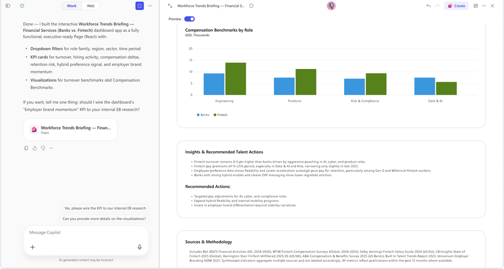
Copilot Notebooks 迎来一大波更新
4—5 月陆续推出Copilot Notebooks 面向已加入 Frontier 计划的用户推出了一系列预览功能，覆盖内容创建、协作与学习三大场景，包括：引用 SharePoint 内容与 OneNote 笔记本、用 Copilot 编辑 Copilot Pages、基于笔记本内容生成 Word 文档或 PowerPoint 演示文稿、将笔记本共享给 Microsoft 365 组，以及通过思维导图和学习工具探索内容。
- 通过聊天创建和编辑 Copilot Pages5 月推出
用户不必再手动编辑页面，只需在聊天中描述想要修改或新建的内容，Copilot 就会直接在页面上完成更新。对管理员而言，这降低了在 Web 端管理笔记本内容的学习门槛，有助于推动采用率。 - 把外部网页链接作为引用源5 月推出
用户可以粘贴 URL 作为 Notebooks 的引用来源，Copilot 会利用该网页内容来支撑笔记本内的对话与输出，从而把 Copilot 的接地范围从内部内容扩展到外部网络，在保持笔记本上下文集中的同时支持更丰富的调研。 - 一键生成 PowerPoint 演示文稿5 月推出
Copilot 可直接调用笔记本中已有的笔记、引用源和结构来起草幻灯片，成稿风格统一、已预置视觉元素、随时可细化。用户可以指定重点方向、详略程度、篇幅长度以及设计主题（从示例模板中选择），PowerPoint 代理会据此生成一份结构化、可编辑的初稿，用户随后在 PowerPoint 中继续打磨。 - 一键生成 Word 文档5 月推出
用户可基于笔记本中收集的内容与引用源，快速生成报告、摘要、提案等文档。只需在提示词中说明需求，并自定义文档类型、核心主题、目标读者和风格基调，Copilot 就会生成初稿，用户可在 Word 中打开并完成定稿。 - 思维导图5 月推出
思维导图以交互方式呈现整个笔记本内容中的关键主题及其相互关系，并有原文作为支撑。用户可以展开节点、查看特定区域的摘要，还能让 Copilot 就图上内容做深入解读，从而更快理解复杂概念与笔记。 - OneNote 移动端（iOS）多模态采集5 月已在 iOS 推出
用户可以在一次会话中同时采集音频转录、图片和手打笔记，特别适合线下会议、白板讨论等离线场景。Copilot 随后会把这次采集整理成一个结构化的 Copilot Page，包含洞察与用户原始内容，并保存到指定的笔记本中。
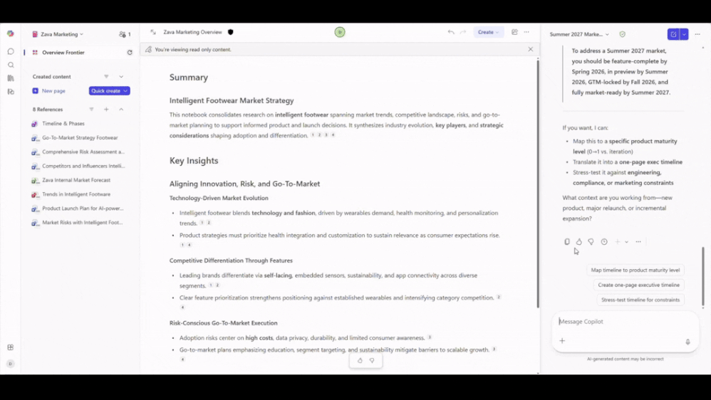
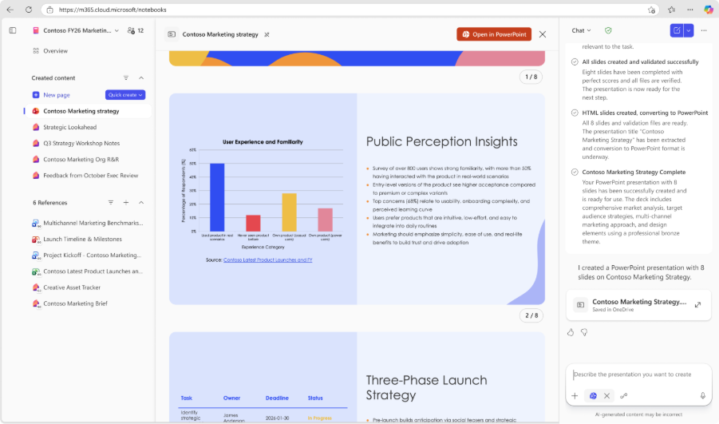
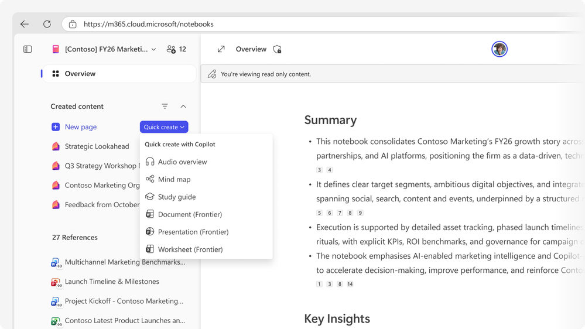
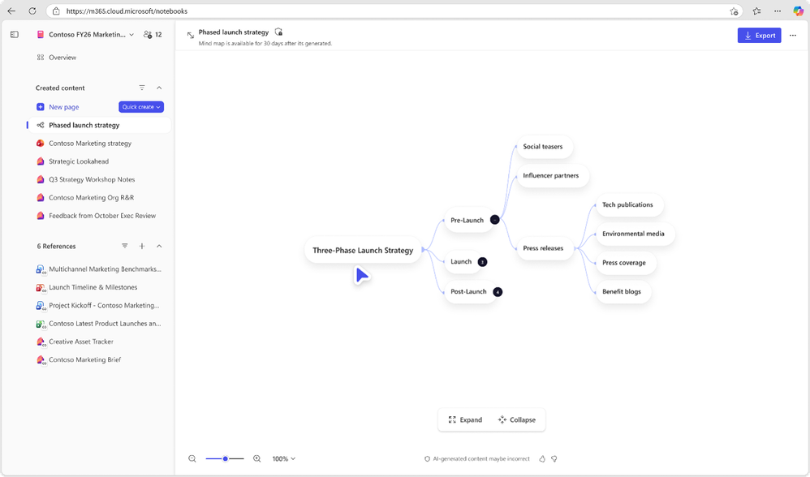
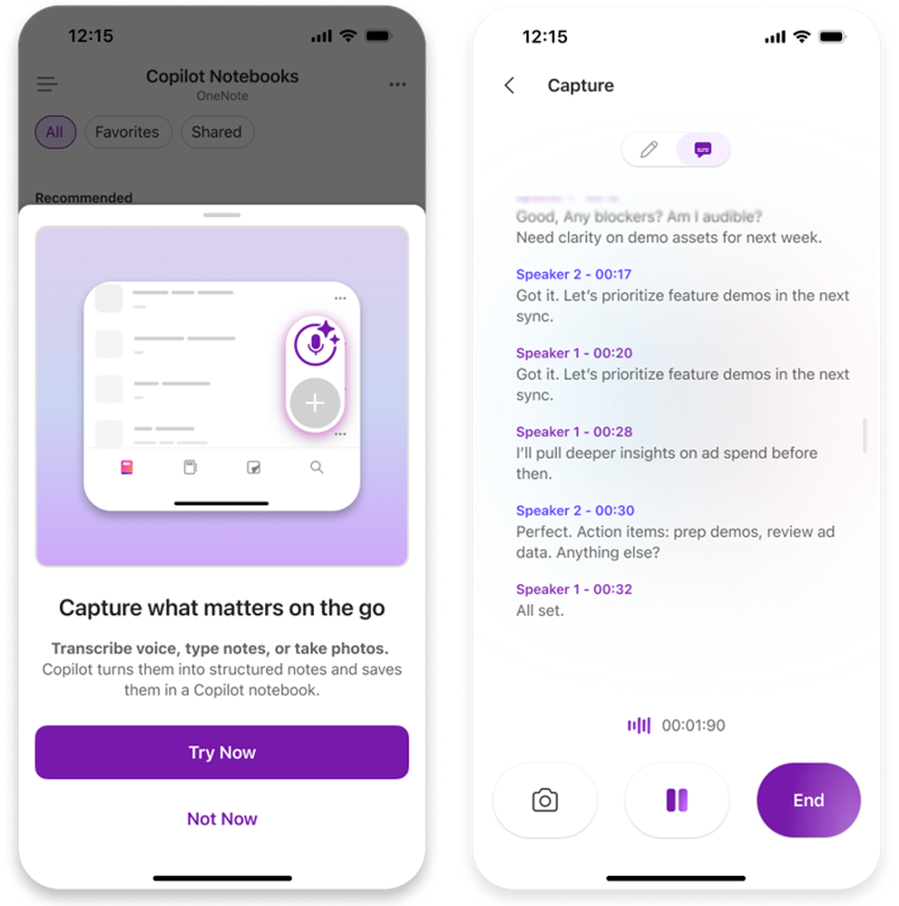
Excel 中的 Copilot：计划模式与 Python 支持
计划模式（Plan mode）5 月推出
计划模式会在改动工作簿之前，先给出一份清晰的分步方案，让用户放心地执行复杂改动。用户在提示词输入框上方的菜单中选择「Plan」即可进入。随后可以查看 Copilot 打算如何完成任务、会用到哪些数据或能力，并按需调整方案——确保在真正落笔之前，每一处编辑都是有意为之、透明可见且符合预期。这让用户在处理多步骤或影响面较大的任务时，始终掌握主动权。
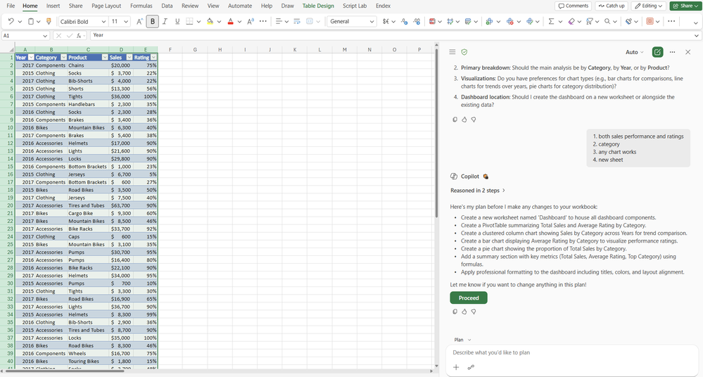
Python 支持5 月推出
现在用 Copilot 编辑 Excel 时可以调用 Python，无需离开工作簿即可完成更高阶的数据分析。Copilot 在执行编辑时可运用 Python 技术来转换数据、生成可视化并完成复杂的多步骤任务；启用 Python 后，Copilot 还能在编辑过程中直接产出图表等视觉结果。用户可以在提示词中明确要求使用 Python，Copilot 也会在必要时自动调用。
PowerPoint 中的 Copilot：图像编辑选项与公开网页接地
可选择图像生成模型4 月已推出
在创建或编辑图像时，用户可以自行选择使用哪个图像模型，包括 GPT-Image、Flux，或者交由「自动」设置为当前需求挑选最合适的模型。用户为幻灯片生成视觉素材或修改现有图像时，Copilot 会把提示词路由到所选模型并返回可继续迭代的结果。模型选择权让图像生成在质量、风格与治理要求上更好地与团队预期对齐。
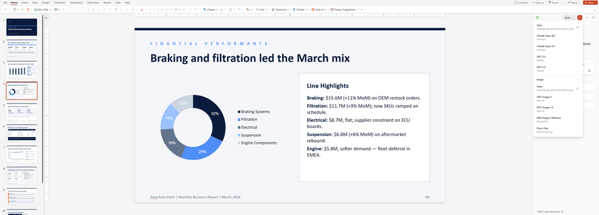
Microsoft AI Image 2 Efficient 模型4 月已推出
用户现在可以使用 Microsoft AI Image 2 Efficient 模型编辑图像，以更快的速度获得高质量的创作与编辑效果。无论是从提示词生成新视觉，还是优化已有图像，都能快速迭代到理想的风格、调性与内容。该模型在性能和效率上的提升，让团队无需离开 Microsoft 365 就能产出可直接用于演示的精美视觉素材。
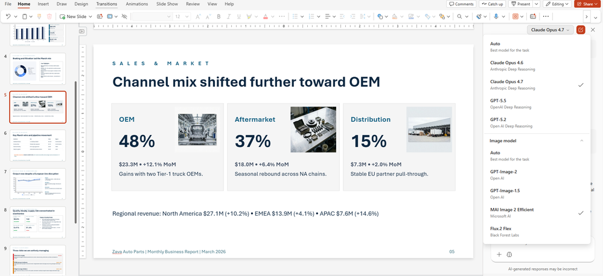
以公开网页作为素材来源4 月已推出
制作演示文稿时，Copilot 现在可以把公开网页作为素材来源，用户无需复制粘贴即可让幻灯片基于最新的外部信息。添加网页引用后，Copilot 会提取相关上下文，生成可继续细化的初始大纲和幻灯片，帮助用户在 Microsoft 365 内部就做出更准确、来源更可靠的演示文稿。
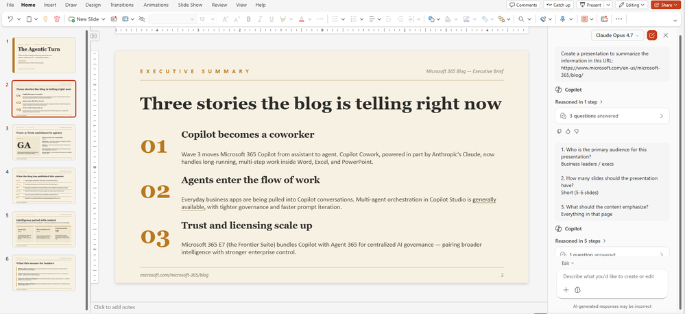
Word 中的 Copilot：新增 Claude 模型
4 月已推出Word 中的 Copilot 现已提供 Claude 模型选项，用户在起草或编辑内容时又多了一个高质量的大模型选择。用户可以在 OpenAI 系列模型之外选用 Anthropic 模型，Copilot 会使用所选模型运行相同的编辑工作流。对于偏好特定模型行为的团队来说，这在受管控的环境内提供了更多灵活性。
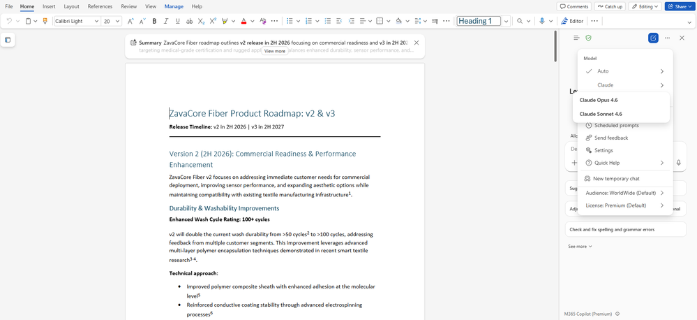
Teams 中的 Copilot：来电代接与交替传译
Copilot 来电代接（call delegation）5 月推出
用户现在可以授权 Copilot 代为处理 Teams 来电。在 Teams 通话设置中启用后，Copilot 可帮助接听来电并向来电者了解背景信息，供用户判断是否要接。它还能通过 Microsoft Bookings 安排后续预约，确保用户不会遗漏那些真正重要的来电者。
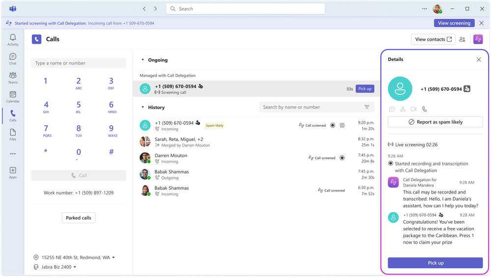
交替传译（consecutive interpretation）4 月已进入公开预览
交替传译是 Microsoft Teams 口译员（Interpreter）的一种新模式，让使用两种语言的会议协作更自然。在该模式下，翻译会在每位发言人说完之后才开始，形成一种轮流交替的节奏，更贴近多语言交流中人们的真实沟通方式。此外，交替传译会把口译员呈现在会议舞台上，所有人都能看见和听见，从而更容易跟上节奏、参与讨论并保持信息同步。至此，口译员共支持两种模式：去年推出的实时同声传译，以及这次面向来回对话场景设计的交替传译。
OneDrive 中的 Copilot：开箱即用的提示词
4 月已推出OneDrive 文件预览界面新增了可发现的 Copilot 操作入口，用户打开文件的瞬间就能看到 Copilot 能做什么。该功能在 SharePoint 中同样可用，会在 Copilot 按钮旁展示一组现成的提示词，帮助用户直接完成摘要、生成 FAQ 等任务，无需从零构思提示词。这降低了 Copilot 的上手门槛，也让不同内容类型下的使用方式更趋一致。
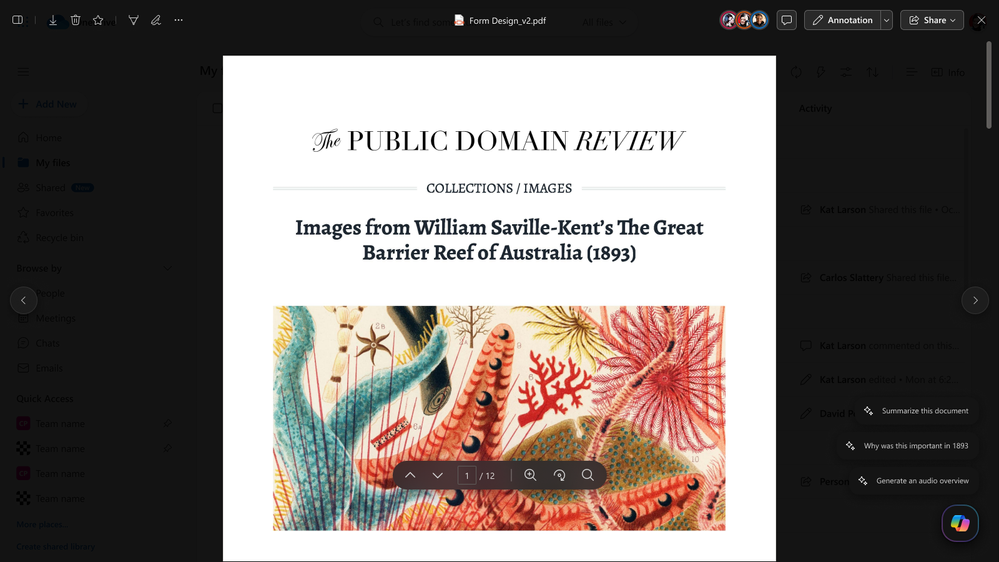
通过 Agent Builder 向 Agent Store 提交代理
5 月推出Agent Builder 新增了提交审批流程：代理在发布到组织的 Agent Store 目录之前，需先提交给管理员审核批准。这既能帮助组织规模化分发高质量的内部代理，又能让 IT 管理员保持管控。审批通过后，代理会出现在 Agent Store 的「由贵组织构建（Built by your org）」板块中，供全组织用户发现并安装。
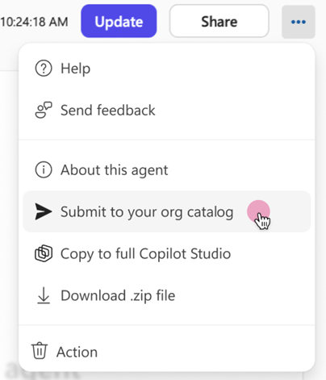
Outlook 中的 Copilot：直接在画布中生成初稿
3 月已在新版 Outlook 推出Outlook 中的 Copilot 现在会直接在撰写画布中写出初稿，并可与用户持续迭代改进。它不再只是一次性生成草稿，而是就地写作，同时就目标、受众或语气提出澄清性问题，再根据用户的回答就地更新邮件内容。用户只需几轮快速交互即可把邮件打磨到可发送状态，所有改动都在 Outlook 中清晰可见，既不用复制粘贴，也不会出现意外的格式问题。
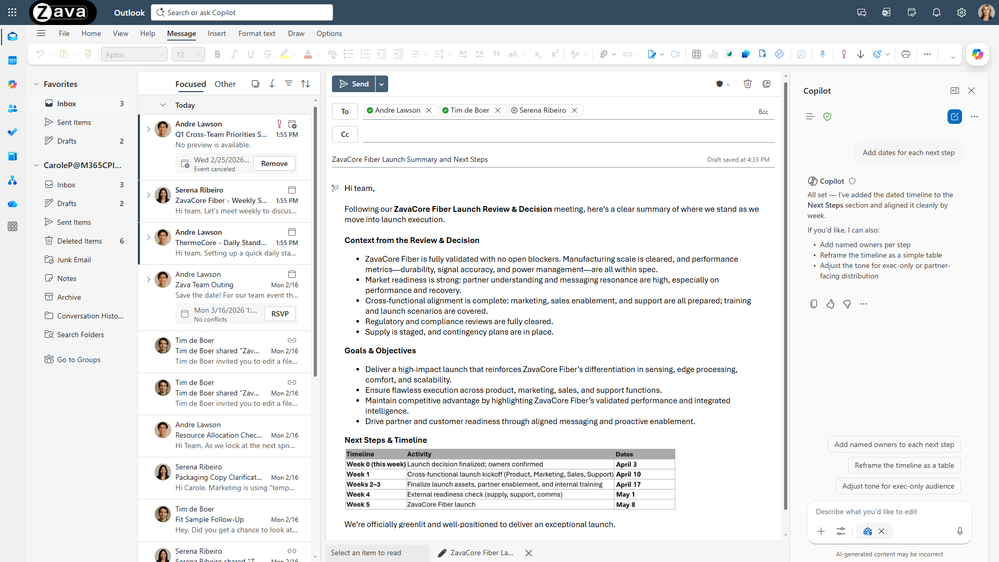
面向管理员的管控能力
Copilot 仪表板：按天导出与重度用户洞察
按天导出（Export by day）5 月公开预览，8 月全球推出
管理员现在可以基于最新的 Copilot 采用与影响数据，更快地做出许可分配或干预调整决策。通过「按天导出」，可下载最近 28 天内按用户和日期聚合的去标识化 Copilot 使用指标，从而在采用与许可方面做出更快、更有数据依据的判断。
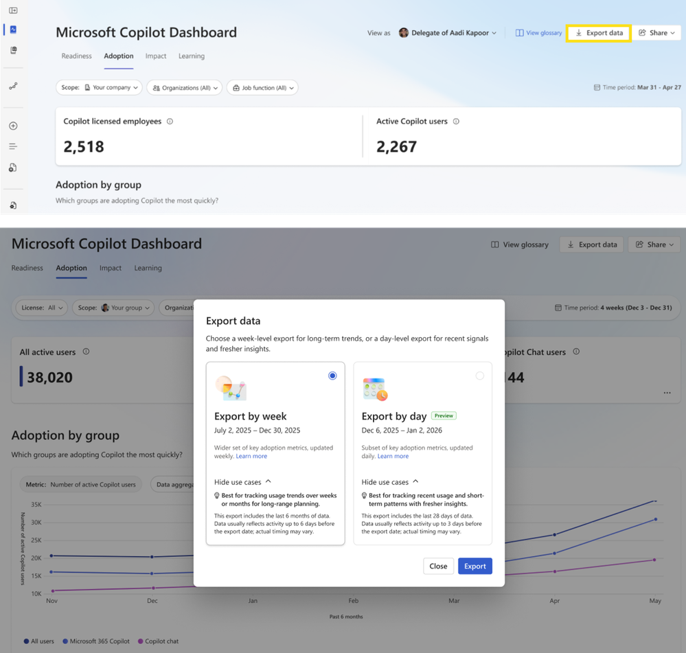
重度用户洞察（Power users insights）5 月推出
管理员现在可以识别出参与度最高的 Copilot 用户，把赋能资源投向对持续采用影响最大的地方。在 Copilot 仪表板更新后的「采用（Adoption）」选项卡中，该功能会依据使用频率和稳定性，把用户分为重度用户、习惯型用户、新手用户和未使用 Copilot 的用户，帮助组织激活内部拥护者、发现可复制的工作流，并在全组织范围内扩大赋能规模。
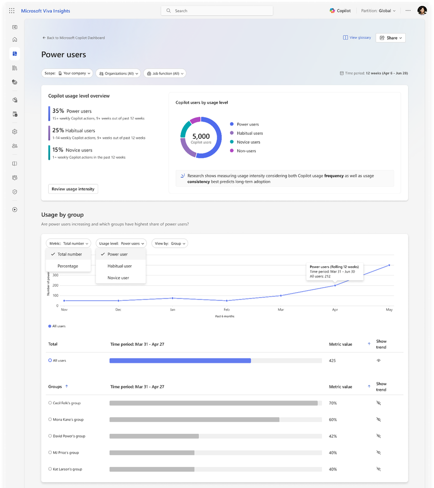
Microsoft 365 管理中心：计费管理与组织消息新选项
预付容量包额度作为唯一计费方式4 月已推出
Microsoft 365 管理中心新增支持：在受支持的 Copilot 按量付费体验中，可将预付容量包额度设为唯一的计费方式，从而在启用按用量计费场景的同时避免产生额外的按量付费开销。管理员可以创建容量包策略，确保被策略覆盖的用户只从可用的预付额度中扣减用量，让支出更可预测、更贴合内部预算。
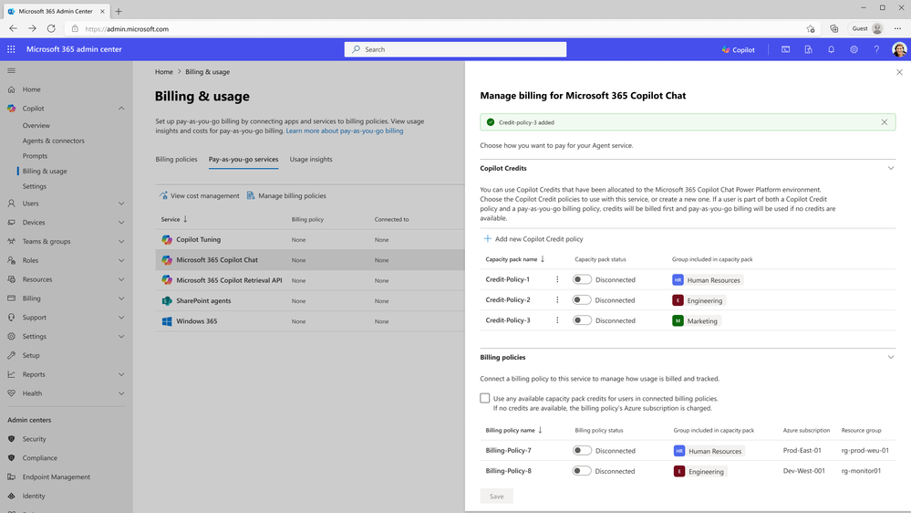
组织消息支持邮件投递4 月已推出
Microsoft 365 管理中心的组织消息（Organizational messages）在任务栏、Spotlight、通知、Teams 弹出提示等 Windows 触点之外，现已支持通过电子邮件投递。这为管理员提供了又一个用户熟悉的沟通渠道，同时消息管理仍集中在同一套工作流中。新增邮件渠道扩大了触达范围，也减少了对独立工具的依赖，简化了变更沟通。
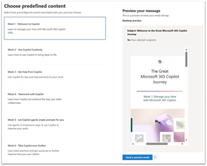
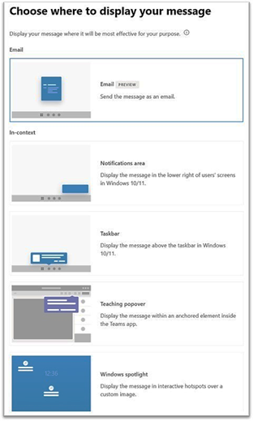
组织消息支持用户细分（user segments）4 月已推出
管理员现在可以基于动态的、由使用行为驱动的受众来定向投放组织消息，而不再局限于静态用户组。例如，可以专门面向「尚未尝试过某项功能」的用户推送消息，让沟通更具相关性、时机更恰当。这有助于提升参与度，同时把噪音降到最低——用对的消息触达对的人。
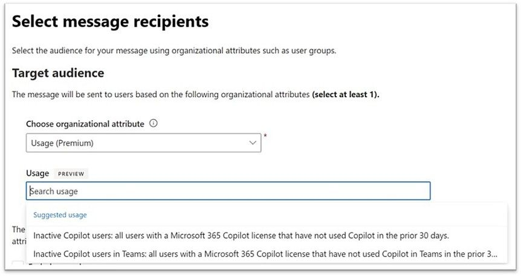